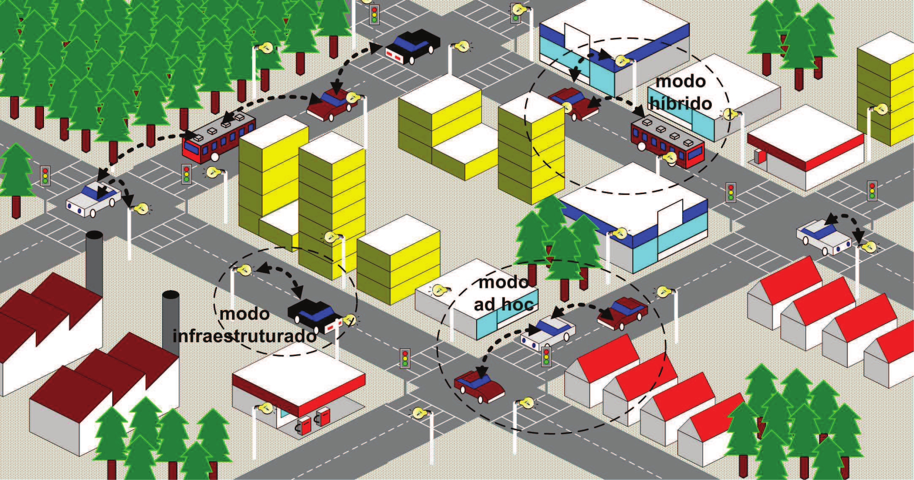
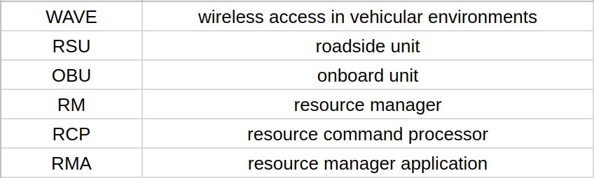
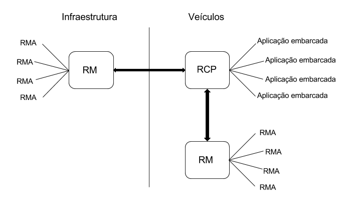
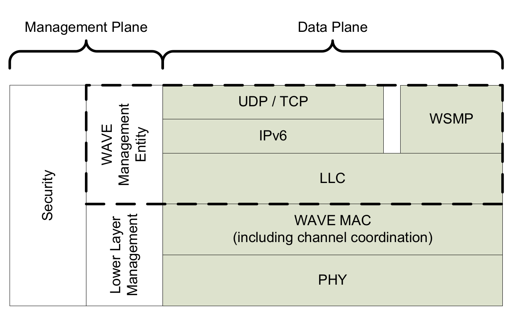

Introdução
Redes veiculares são uma evolução tecnológica nos meios de comunicação presentes nos automóveis. A proposta se baseia em transpor a barreira de comunicação existente entre diferentes veículos. Isto significa que a comunicação, hoje realizada apenas entre condutor e veículo, poderá ser realizada, agora, entre veículos. Um dos maiores desafios na adoção desse sistema é a escalabilidade. Como manter uma rede de veículos bem conexa em larga escala? Protocolos criados para utras redes sem fio não são apropriados para redes reiculares, visto que existem problemas como escalabilidade (alto número de nós) e alta mobilidade dos mesmos.
Em resposta a isto, existem as chamadas VANETs (Vehicular Ad Hoc Networks), que são redes redes em que os nós são compostos pelos próprios veículos, no que chamamos de "vehicle-to-vehicle" (V2V) e pela infraestrutura rodoviária, no que chamamos de "vehicle-to-road" (V2I). A imagem abaixo pode ilustrar o funcionamento híbrido de uma rede veicular em cena.

Figura 1: Ilustração de uma Rede Veicular VANET (Reproduzido de [2])
A discussão desse trabalho terá como objetivo tentar explicar o que é a arquitetura WAVE (Wireless Access to Vehicular Environment), como ela surgiu e o porquê da adoção de tal arquitetura.
WAVE
WAVE (Wireless Access to Vehicular Environment) é o nome dado a uma arquitetura definida em 6 documentos: IEEE P1609.1, IEEE P1609.2, IEEE P1609.3, IEEE P1609.4, IEEE 802.11 e IEEE 802.11p. O objetivo de tal arquitetura é garantir a padronização das comunicações feitas em redes veiculares no grupo IEEE 802.11.
O padrão IEEE 802.11p é o que define as camadas físicas e de controle de acesso ao meio (MAC), e é baseado no padrão IEEE 802.11a, que é um padrão para redes locais.
O IEEE P1609.1 é o padrão que controla a comunicação entre as duas unidades que auxiliam o fluxo de dados pela rede. São elas as Unidades de Acostamento (RSUs), que são estáticas ao longo das rodovias e as Unidades de Bordo (OBUs) acopladas aos veículos.
O IEEE P1609.2 é responsável pela segurança. Define um processamento de mensagens seguro e quando estes deverão ser realizados.
O IEEE P1609.3 define serviços das camadas de rede e transporte através do plano de gerenciamento, onde são realizadas configurações, e plano de dados, onde são realizados os serviços de comunicação.
Finalmente o IEEE P1609.4, que define a utilização de diversos canais da arquitetura.
Todos esses documentos serão mais bem explicados no tópico a seguir.
Arquitetura
Gerente de recursos
Antes de começar a escrever o padrão, algumas abrviaturas:
Tabela 1: Abreviaturas
O Gerente de Recursos é uma aplicação DSRC (Dedicated Short-Range Comunication) para WAVE, e é responsável pela formatação das mensagens de comando, de armazenamento de dados e de mensagens de status e pedidos entre aplicações e os nós da rede. Na arquitetura WAVE, as RSUs (Unidades de Acostamento) são os dispositivos que hospedam aplicações e oferecem serviços para as OBUs (Unidades de Bordo). O RM (Gerente de Recursos), neste contexto, é basicamente uma aplicação da arquitetura WAVE que é executado na RSU ou na OBU. Já a OBU, executa o RCP (Resource Command Processor). Outras aplicações, conhecidas como RMAs(Resource Manager Applications) se comunicam com o RCP através do RM. Este padrão (P1609.1) se concentra em descrever como ocorre a multiplexação dos pedidos feitos pelas RMAs para os RCPs presentes nas unidades de bordo. A comunicação tem como objetivo que as RMAs forneçam alguns recursos como memória e interfaces para os RCPs, que ficam nas unidades de bordo. Os meios de comunicação entre as RMAs e RMs são cabeadas, enquanto as feitas entre as RMs e as RCPs são wireless, tendo a segurança mais comprometida. Para ilustrar o funcionamento geral, estão representados os dois tipos de comportamento viáveis na figura abaixo.

Figura 2: Componentes de uma rede veicular
Cada RMA, envia uma série de comandos para serem executados nas RCPs como, por exemplo: Armazenar e retirar informação da OBU, requisitar o uso de recursos de interfaces na OBU, entre outros. É importante perceber, que essas interfaces, não são as interfaces do usuário do veículo, mas sim da unidade de bordo.
Este padrão explica como "gerenciar recursos", mas que recursos seriam esses? Dentre outros, podemos citar: Leitura e escrita em memória e interfaces de usuário presentes nas OBUs.
Segurança
Para dar início a esta abordagem, é necessário saber sobre qual segurança está sendo tratada. Em Redes Veiculares, podemos nos referir à segurança do tráfego de dados da rede, assim como à segurança do motorista do veículo. Mesmo sabendo que existe uma relação direta entre as duas abordagens, esta seção se destinará a tratar do primeiro tipo de segurança, ou seja, da segurança relacionada ao tráfego de dados na rede.
O problema de segurança na WAVE se dá pela natureza insegura da comunicação sem fio. Além disso, têm-se que os veículos pessoais serão equipados com dispositivos que utilizam dispositivos portáteis, dos quais seus donos esperam privacidade. Então, o propósito de se tratar da segurança dentro da arquitetura WAVE é tentar não deixar vazar informações pessoais ou confidenciais do usuário.
A arquitetura WAVE suporta dois tipos de transferência de dados: IPv6 ou WSMP (WAVE Short Message Protocol), que é especificado pelo padrão IEEE P1609.3.
Os serviços de segurança para a arquitetura WAVE são formados por serviços de segurança interna WAVE (WAVE Internal Security Services) e serviços de segurança de camada superior WAVE (WAVE Higher Layer Security Services).
Dentre os serviços de segurança interna WAVE, podemos citar o Serviço de Segurança de Dados (Secure Data Service), que transforma protocolos de dados de unidade (protocol data units) desprotegidos, em protocolos de dados de unidade protegidos (secured protocol data uinits). Além disso, pode-se citar também a administração de segurança (security management), que administra informações sobre certificados.
Já nos serviços de segurança de camada superior WAVE, temos o P2PCD (Peer-to-peer certificate distribution), que habilita a distribuição de certificados peer-to-peer.
Serviços da rede
O sistema WAVE é baseado em sistemas de radiocomunicações, e oferece serviços de comunicação entre veículos e estrada, veículos e outros veículos, e talvez com outros dispositivos WAVE. Os serviços de rede oferecem serviços de gerenciamento e serviços de entrega de dados entre dispositivos.
O serviços de redes representam as camadas 3 e 4 da pilha de comunicação do open system interconnect (OSI).
Os protocolos de comunicação utilizados são o protocolo genérico de Internet versão 6 (IPv6) e o protocolo de serviço de mensagens curtas (WSMP). Também é importante ressaltar que um determinado dispositivo pode não suportar ambos os protocolos.
O sistema WAVE fornece uma pilha de protocolo de comunicação otimizada para ambiente veicular, apresentando tanto elementos customizados quanto de propóstio geral, conforme ilustrado na figura 4. O escopo dos serviços da rede é dado pelo envoltório tracejado.

Figura 4: Pilha do protocolo WAVE (Reproduzido de [8])
Os serviços de dados podem ser resumidos em:
- Controle de Enlace Lógico (LLC), que é uma subcamada que comporta o tráfego tanto do IP quanto do WSMP
- Internet Protocol version 6 (IPv6), que utiliza como camada de transporte UDP e TCP
- WAVE Short Message Protocol (WSMP), que troca dados de WAVE Short Messages (WSM) com as camadas mais altas.
Os serviços de gestão (WME) podem ser resumidos em:
- Pedidos de serviço e atribuição de acesso ao canal, onde o WME processa solicitações de serviço das camadas superiores e fornece acesso ao canal.
- Gerenciamento de entrega de dados, onde o WME aceita dados de gerenciamento recebidos pelo ar, e processa ou passa para um entidade de gerenciamento designada.
- Serviço de monitoramento de anúncios WAVE, que monitora e verifica serviços anunciados por outros dispositivos WAVE para serem disponibilizados para as camadas mais altas.
- Congfiguração IPv6, que configura a pilha do protocolo de IP local utilizando dandos recebidos de outros dispositivos WAVE.
- Manutenção da base de informações de gerenciamento (MIB), onde são mantidas informações de status e configuração.
WAVE Short Message
WSM (WAVE Short Message) é um serviço de rede alternativo ao IPv6 com UDP/TCP (ilustrado na figura 4), que busca maior eficiência no ambiente WAVE e é regularizado pelo protocolo WSMP (WAVE Short Message Protocol). Neste tópico será brevemente abordado como ocorre a transmissão e recepcção de WSM.
No recebimento de um pedido de WSM-WaveShortMessage.request da camada superior, o protocolo WSMP calcula o tamanho do cabeçalho do WSMP e verifica se o tamanho do cabeçalho em conjunto com os dados(WSMData) é menor que o parâmetro WsmMaxLenght, que fica armazenado no MIB (Management Information Base).
Aplicações
Referências Bibliográficas
- [1] BECHLER, M.; JAAP, S.; WOLF, L. An optimized TCP for inter-net access of vehicular ad hoc networks. Em Networking 2005. Springer Berlin / Heidelberg, v. 3462 de Lecture Notes in Computer Science, p. 869–880, 2005.
- [2] ALVES, R. S.; CAMPBELL, I. V.; COUTO, R. S.; CAMPISTA, M. E. M.; MORAES, I. M.; COSTA, L. H. M. K.; RUBINSTEIN, M. G.; DUARTE, O. C. M. B.; ABDALLA, M.. Redes Veiculares: Princípios, Aplicações e Desafios. Em Simpósio Brasileiro de Redes de Computadores e Sistemas Distribuídos (SBRC), 2009.
- [3] DEERING, S.; HINDEN, R.. Internet protocol, version 6 (IPv6) specification. RFC 2460. Disponível em http://www.ietf.org/rfc/rfc2460.txt. Acesso em 23 ago. 2017.
- [4] HARTENSTEIN, H.; LABERTEAUX, K. P.. A tutorial survey on vehicular ad hoc networks. IEEE Communications Magazine, p. 164-171, 2008.
- [5] THOMSON, S.; NARTEN, T.; JINMEI, T.. IPv6 stateless address autoconfiguration. RFC 4862. Disponível em http://www.ietf.org/rfc/rfc4862.txt. Acesso em 23 ago. 2017.
- [6] BOOYSEN, M. J.; GILMORE, J. S.; ZEADALLY, S.; ROOYEN, G.-J.van. Machine-to-Machine (M2M) Communications in Vehicular Networks. Em KSII Transactions on Internet and Information Systems. Department of Computer Science and Information Technology, University of the District of Columbia, Washington, DC, 2008.
- [7] MORGAN, Y. L.. Managing DSRC and WAVE Standards Operations in a V2V Scenario. Em International Journal of Vehicular Technology. Article ID 797405, 2010.
- [8] IEEE Std 1609.3-2010. IEEE Standard for Wireless Access in Vehicular Environments (WAVE)—Networking Services.
Declaração de autoria
Este trabalho foi totalmente produzido pelos autores que declaram não terem violado os direitos autorais de terceiros, sejam eles pessoas físicas ou jurídicas. Havendo textos, tabelas e figuras transcritos de obras de terceiros com direitos autorais protegidos ou de domínio público tal como idéias e conceitos de terceiros, mesmo que sejam encontrados na Internet, os mesmos estão com os devidos créditos aos autores originais e estão incluídas apenas com o intuito de deixar o trabalho autocontido. O(s) autor(es) tem(êm) ciência dos Artigos 297 a 299 do Código Penal Brasileiro e também que o uso do artifício de copiar/colar texto de outras fontes e outras formas de plágio é um ato ilícito, condenável e passível de punição severa. No contexto da Universidade a punição não precisa se restringir à reprovação na disciplina e pode gerar um processo disciplinar que pode levar o(s) aluno(s) à suspensão;